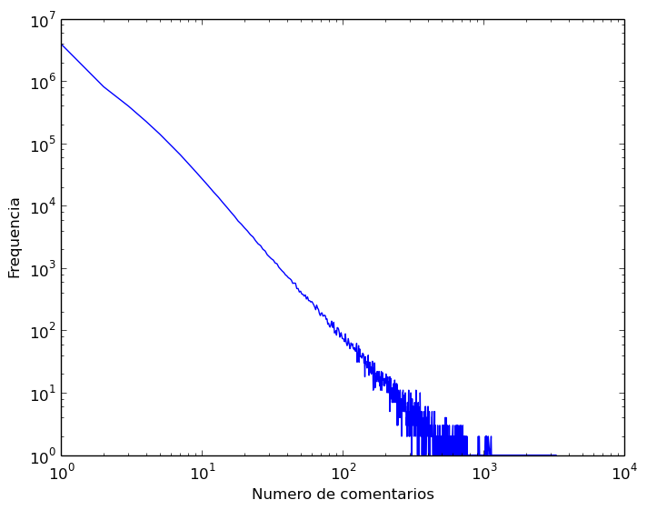
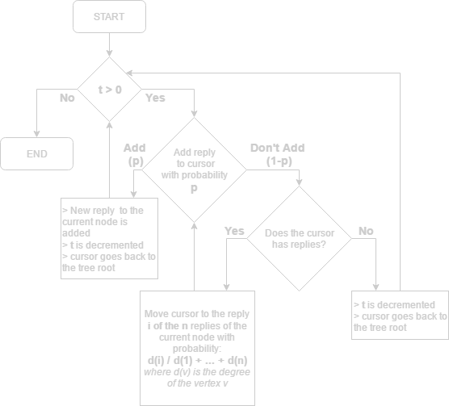
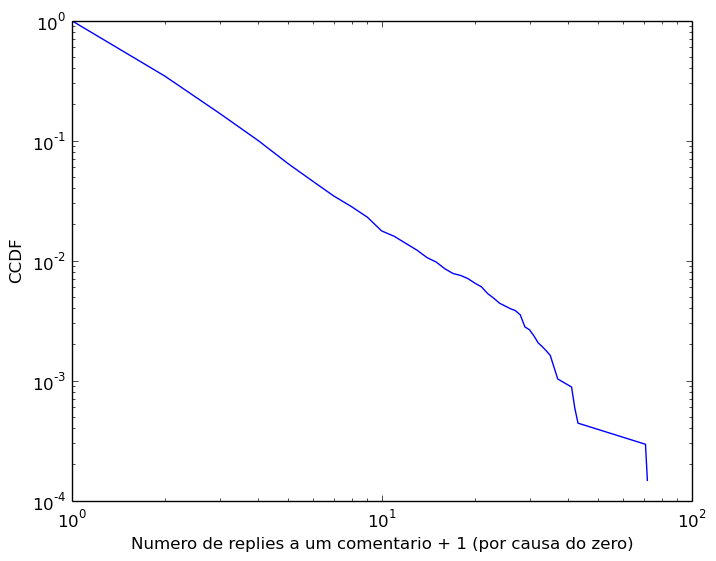
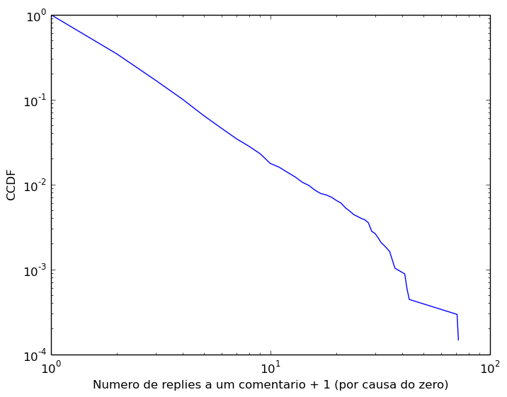
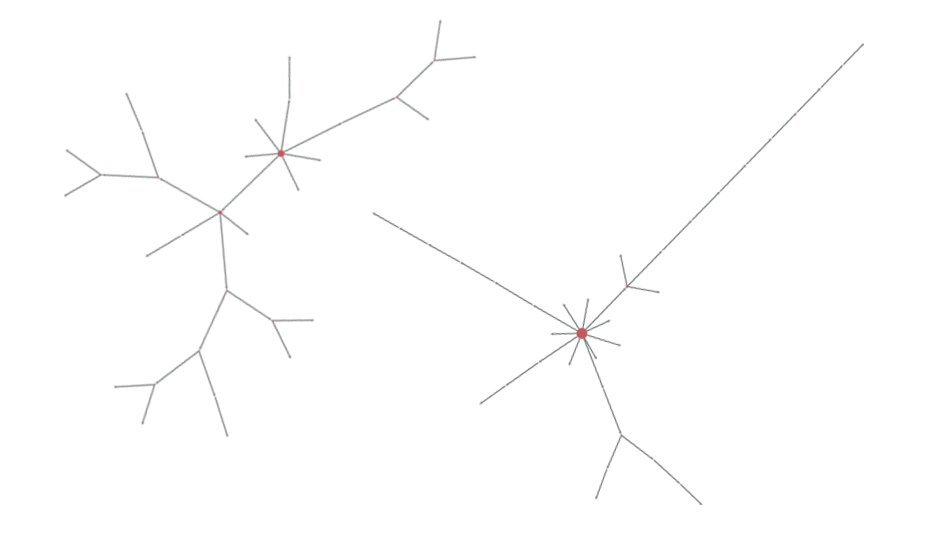

Reddit?
Reddit?
"The front page of the internet"
It's a content centered anonymous social network.
7th most popular website on USA, 22th on the world.
BIG DEAL
THREADS?
Reddit owes its success to its comments section. Upvotes, downvotes and replies.
TREES?
Each thread a tree
Each comment a vertex.
Each reply an edge.
A tree shaped graph!
Great for modelling.
Excellent for a mathematical analysis.
Interesting topological metrics.
And more!
But why?
To create a model capable of representing the
real thing.
And how?
Studying the real structures and being clever.
(trying to)
THE REAL THING
Kaggle's May 2015 open comments dataset
Get personal with a dataset of comments from May 2015
About 15 million comments.
~30GB
Some interesting facts
 Distribution of the number of comments by threadAnd more
Power laws everywhere.
Many interesting distributions related to the tree topologies, height density and comment degree.
(more [PT-BR] here)
Modelling
How to recreate trees with such distributions in your garage?
PREFERENTIAL ATTACHMENT
Think of the Barabási-Albert and Price models.
Now think of how Reddit is used. How its users behave and how content is ditributed, ranked and shown.
Perfect
Proposed model
The "R(t,p)" model.
A Reddit comment thread tree generating model.
A simple aproach on how a reddit user comments.
Based on an interative process of random walks guided by preferential attachment.
- t: number of iterations
- p: a probability function
INITIALIZATION
Step

Model behaviour
Distinct results for distinct values of t and p.
 Relation between N (size), p and t.
Relation between N (size), p and t.
And more
Relations between height and width.
Relations between the parameters: t x p
- Thresholds?
- Limits?
(more [PT-BR] here)
REALITY CHECK
How does the model compare to the real thing?
Sometimes nicely
 
Degree distributions for the subreddit r/explainmelikeiamfive and the model for p1:0.001 and t:1000.

Degree distributions for the subreddit r/explainmelikeiamfive and the model for p1:0.001 and t:1000.
BUT NOT ALWAYS
Can be hard to compare whole subreddits with static parametrizations.
Parameters change everything. Distinct subreddits have distinct parametrizations.
The probability function p greatly influences topology.
(more [PT-BR] here)
HOW DOES IT LOOK?
 Model generated thread (left) with p1:0.001 and t:10000 of size 33 against an average sized thread of r/worldnews (right) with 36 vertexes.looking good
Could be better
FUTURE
Test variations of the model.
Try new probability functions.
More statistical analysis.
Analytical studies.
Thanks
you made it? awesome! here are some links for you:
Collaborators: pboueke (me) and gthurler.
Our repository with a python implementation.
[PT-BR] The first presentation on the subject.